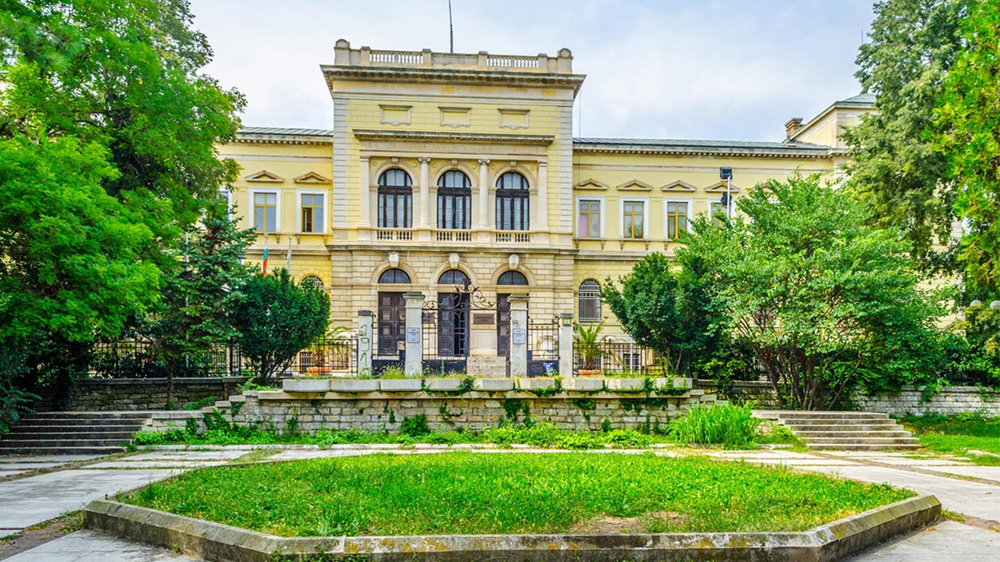

Най-големият храм във Варна и втори по големина в България. Построен е през 1880–1886 г. Архитектурата му е вдъхновена от руски православни църкви, с голям централен купол и впечатляващи стенописи. Намира се в центъра на града и е една от най-емблематичните забележителности на Варна.


Най-големият открит римски бански комплекс в България, датиращ от края на II век. Площта му е около 7 декара, като някои от стените достигат до 20 метра височина. Обектът представя римската култура, архитектура и начина на живот в античния град Одесос.
Музеят съхранява най-старото обработено злато в света – Варненското златно съкровище (4600–4200 г. пр. Хр.). Разполага с богата колекция от праисторически, тракийски, гръцки и римски артефакти. Намира се в красива сграда от XIX век, в близост до центъра на Варна.

Средновековен скален манастир от XIII–XIV век, изсечен във варовикови скали на два етажа. Свързан е с ранното християнство и монашеския живот, а вътрешността му включва килии, параклис и крипта. Разположен е в природен парк над Златни пясъци и е популярна туристическа дестинация.
Уникален природен феномен от каменни колони, достигащи до 7 метра височина, разположени в пясъчна пустинна местност. Произходът им е предмет на научни спорове — възможни са геоложки или биологични обяснения. Намират се на около 18 км от Варна и са една от най-мистичните природни забележителности в региона.